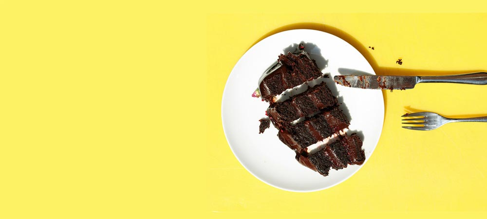

Hi There!
I’m Achal, the cook, writer and photographer behind this little blog. I’ve grown up in the kitchen along side my mum and grandmothers and conversations in my family are always about the next meal. I’ve picked up their love for food along the way, and with this blog, I share my food story with you.
A food blog that makes cooking fun and simple - a perfect dish every time! Our easy and fail-proof recipes deliver authentic flavors using modern and innovative techniques.
A food blog infused with culture and love
A food blog that makes cooking fun and simple - a perfect dish every time! Our easy and fail-proof recipes deliver authentic flavors using modern and innovative techniques.
How did we ever manage to cook before the arrival of the internet? I suppose we had to rely on cookbooks, cooking tv shows, and knowledge handed down from our grandmothers. Of course, the more daring would experiment in the kitchen, remembering the successes, and mercifully forgetting any culinary disasters.

My Food Blog Theme
Nowadays we have a multitude of food blogs offering mouth-watering recipes, suggestions, and vivid photography, sending us straight to the kitchen … or the supermarket. There are hundreds of food blogs to tempt your taste buds.
Two Column Text Sample
My weaknesses have always been food and men – in that order.
I know once people get connected to real food, they never change back
Everyone loves food. Looking at it. Smelling it. Taking pictures of it. Making it. Eating it. Posting it on Instagram and Pinterest. And of course, talking about it! Enjoy these food quotes that remind us that life is short, so eat great food. My personal favorite is the funny and famous quote from Julia Child about butter and cream! These sweet, simple, and inspirational thoughts are perfect for sharing with friends, family, and the ones you love.
Food for us comes from our relatives, whether they have wings or fins or roots. That is how we consider food. Food has a culture. It has a history. It has a story. It has relationships. A recipe has no soul. You, as the cook, must bring soul to the recipe.
Food For Making Your Soul Happy
Food can be very transformational, and it can be more than just about a dish. That’s what happened to me when I first went to France. I fell in love. And if you fall in love, well, then everything is easy.
Health meets Food provides medical professionals, food service professionals, students, patients, and community members with hands-on culinary training and lifestyle lessons using an evidence-based approach that aligns with current medical literature. The curriculum has been designed to help physicians and other medical professionals understand and communicate the impact of good nutrition on their patients’ health. As an indicator of its recognized value, Health meets Food courseware already has been adopted by over 50 medical schools, nursing schools and residency programs across the United States. Health meets Food expands the audience for information about the link between food and medicine beyond practicing physicians and other members of medical community and professional culinarians to anyone interested in the intersection of good health and good nutrition.
